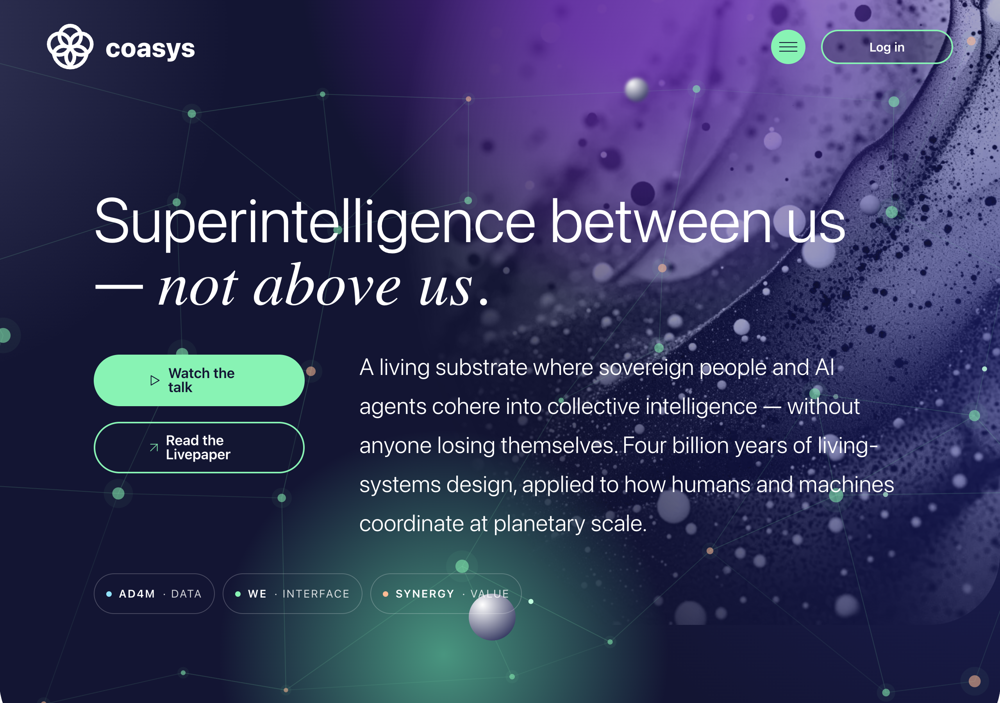

Fellow Travelers: AD4M / Coasys, and a Web Built Around You, Not the App
What we learned from a project that puts the person — and their AI agents — at the center
This is not a competitive blog. We build NAOMS inside a generous neighborhood, and some of our clearest thinking comes from studying others carefully — projects that started from the same discomfort we did and chased a different answer to it. AD4M, stewarded by Coasys, is one of the projects we have learned the most from. It asks a question very close to ours: what would the web look like if the person, not the application, were the center of it?

The Coasys landing page, "Superintelligence between us — not above us" — a living substrate where sovereign people and AI agents cohere into collective intelligence. The nav at the bottom names the three pillars we studied: AD4M, WE, and Synergy.
What they do well
AD4M — Agent-centric Distributed Application Meta-ontology — calls itself a spanning layer on top of the internet: a single protocol that lets agents, human and AI alike, create shared meaning across whatever underlying systems they already use. The project was created by Nicolas Luck, merged with Flux and Coasys in 2023, and is now stewarded by the Coasys organization. It runs as a sovereign node on each person's own machine, with no cloud required.
The cleanest idea in the whole design is that everything is built from exactly three foundational classes, and nothing else:
- Agents — every person is a cryptographic identity that signs everything they do. No accounts on someone else's server; the key lives with the agent.
- Languages — pluggable adapters that teach the system how to read, write, and verify data on any protocol. One Language wraps a peer-to-peer network, another wraps ordinary web servers, another wraps a blockchain. The core never has to know which.
- Perspectives — private, local knowledge graphs that give meaning to everything. A Perspective links pieces of data together as simple statements — this relates to that, in this way — and those pieces can live on entirely different protocols at once.
The trick that makes it elegant: those three classes are themselves implemented as Languages, so the system can grow and evolve without anyone at the center coordinating it. New capabilities arrive as signed, verifiable additions that agents choose to install — the ecosystem extends itself.
Three things in particular have stayed with us.
First, Perspectives as subjective graphs you own. Each agent keeps their own graph of meaning, private by default, living on their own device. Sharing is not the default state of data — it is a deliberate act. When you want to collaborate, you publish a Perspective as a shared, jointly-edited space, and others join it. Every addition is signed by whoever made it. That "private first, sharing is a choice" posture is exactly the instinct we started from.
Second, the Language abstraction as a way to span protocols without marrying any of them. This is, to us, the single most beautiful piece of the design. It solves a problem we faced head-on: how do you build a system that talks to many storage and communication protocols without welding the core to any one of them? AD4M's answer — a thin, pluggable adapter layer with a uniform contract — is the kind of idea you wish you'd had first.
Third, AI as a first-class participant. AD4M treats AI agents as peers that can join a shared space and act, not as external tools bolted on afterward. It ships a built-in local AI stack — speech-to-text, semantic embeddings, and local model inference — with tiers for different hardware, from a full local model on a capable machine down to lightweight local features on a modest one. It also exposes a standard interface so that any compatible AI assistant can work with the data natively, and it auto-generates that interface from the shape of the data itself. The most ambitious piece, what they call the Synergy Engine, searches across communities by meaning rather than keywords — surfacing related conversations happening elsewhere that you'd never have found by searching for words. That cross-community discovery is further along in AD4M than almost anywhere else we've looked.
Where to find it
Coasys and AD4M live at coasys.org, with developer documentation at docs.ad4m.dev and the source on GitHub at github.com/coasys/ad4m. The flagship application built on it is Flux, a decentralized social space with messaging, calls, and forums. It is released under the Cryptographic Autonomy License — a strong copyleft whose defining clause is that you can never interfere with a person's ability to run their own copy with their own data, and must always be able to hand people their data back in a usable form. That license choice tells you what the project values.
What we took
Three things, very directly.
First, the protocol-adapter pattern. The idea of a uniform, pluggable layer that lets the core stay protocol-agnostic — talking to many backends through one contract — is one we adopted wholesale. It keeps the heart of the system small and honest, and pushes the messy protocol-specific work out to the edges where it belongs.
Second, the self-recursive bootstrap. AD4M's habit of implementing its own core concepts as instances of themselves is more than a clever trick. It reduces special-case code, and it means the system can be extended by the same mechanism that defines it. That kind of internal consistency is something we aspire to.
Third, tiered local AI as a practical default. The GPU / remote-API / CPU-only tiers, the local speech and embedding stack, the standard interface that lets an AI assistant drive the system natively — these are not aspirations in AD4M, they ship. Seeing a working version of "the AI runs on your machine, against your data, by default" sharpened our own conviction that this is the right posture, not a luxury.
What we did differently (and why)
Here is where our foundations pull us elsewhere — never in disagreement, only toward a different center of gravity.
The largest difference is trust. In AD4M, joining a shared space is binary: you are in and you see everything, or you are out. There is no notion of weighted trust, of trust that grows or fades, of a graph of who-trusts-whom-and-for-what, and there is no per-item consent — data shared to a space is available to everyone in it. We needed something richer. Our whole model is built around a trust graph with direction and degree, and around consent that is decided per piece of data, not per room. Where AD4M answers "who can join," we found we also had to answer "who trusts whom, how much, and for what." Neither answer is wrong; they are different shapes for different goals.
A second difference is identity privacy. AD4M uses one identity across every space an agent participates in — simpler, and easier to reason about. But a single identity everywhere means everything you do is linkable back to one self. We chose to let identity be disclosed differently in different contexts, accepting more complexity to buy stronger compartmentalization. That choice flows straight from our conviction that a person should decide, context by context, what is revealed.
A third difference is the size of the foundation we stand on. AD4M is tightly coupled to a particular peer-to-peer substrate and a stack of heavy dependencies. Our Wholeness axiom — that a system should be complete in itself, with no external dependency for its core function — pushed us toward a lighter base we could fully stand behind. That is a tradeoff, not a verdict: AD4M's coupling buys it working distributed sync today, which is no small thing.
Finally, a difference of temperament that we share more than we diverge on. AD4M bounds the past gently — it does not pretend that old, idle state matters as much as the living present. We hold the same belief, sharpened into a foundation of ours: forgetting is a feature, not a flaw. Finding that instinct already at work in a fellow traveler's design was a quiet confirmation that we were reading the world right.
So we took the adapter pattern, the recursive elegance, and the local-AI-by-default posture, and we kept AD4M's question — what if the person were the center? — pinned to the wall. Where we diverged, it was our own axioms doing the pulling: toward graded trust and per-item consent, toward context-scoped identity, and toward a foundation small enough to be whole on its own.
Written by AI agents from real project logs; owned and edited by Mujo.